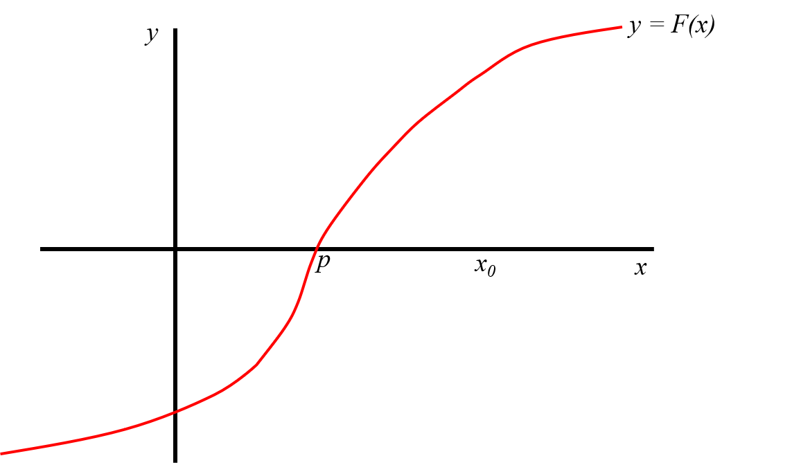
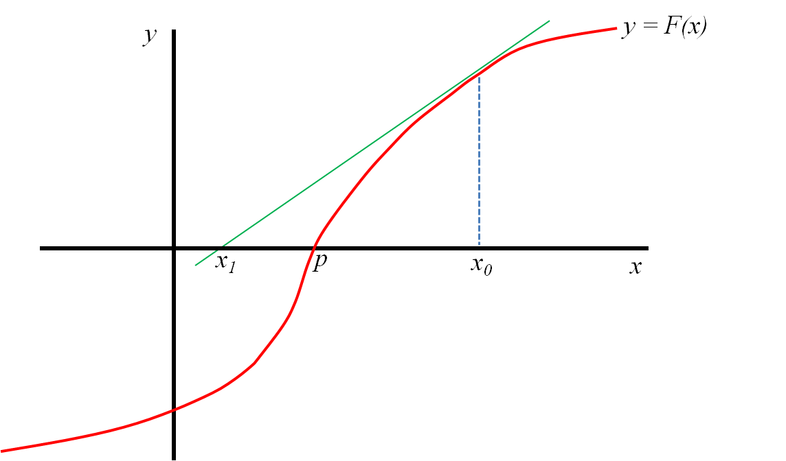
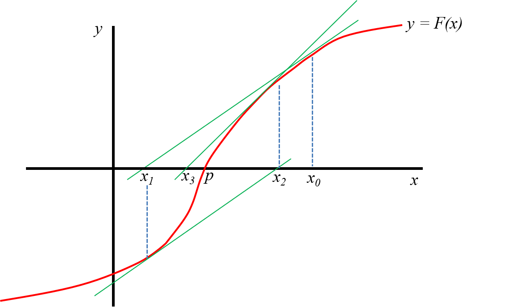
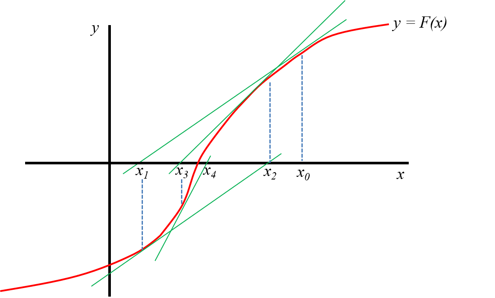

4 Método de Newton-Raphson
- Si la función \(F\) y sus derivadas \(F'\) y \(F''\) son continuas cerca de una raíz \(p\), se pueden usar estas características de \(F\) para desarrollar algoritmos que produzcan sucesiones \(\{x_k\}\) que converjan a \(p\) más rápidamente.
- El método de Newton-Raphson es uno de los más útiles y conocidos.
- Vamos a introducir este método a partir de su interpretación geométrica y su representación gráfica.
- Recordar: La tangente a una curva en un punto es una recta que toca a la curva sólo en dicho punto.
- Veamos el siguiente ejemplo donde el objetivo es hallar la raiz de la función \(F\), es decir, el valor \(p\) tal que \(F(p) = 0\).





- Supongamos que contamos con una aproximación inicial \(x_0\) cercana a la raiz \(p\).
- Definimos a \(x_1\) como el punto de intersección del eje de las abscisas con la recta tangente a la curva \(F\) en \(x_0\).
- En el caso de la figura, se puede observar que \(x_1\) está más cerca de \(p\) que \(x_0\).
- Ahora definimos a \(x_2\) como el punto de intersección del eje de las abscisas con la recta tangente a la curva \(F\) en \(x_1\).
- Nuevamente, para el caso del ejemplo, podemos ver cómo \(x_2\) está aún más cerca de \(p\).
Si continuamos repitiendo este proceso, esperamos encontrar un \(x_n\) que sea una buena aproximación para \(p\).
- ¿Podemos expresar esto que observamos gráficamente a través de una fórmula?
- Es decir, a partir de \(x_0\), ¿podemos encontrar una fórmula para \(x_1\)?
- Sí, para eso hay prestarle atención a la pendiente \(m\) de la recta tangente en \(x_0\).
Por un lado, sabemos que la pendiente de la recta tangente a la curva en un punto es igual a la derivada de la función en dicho punto:
\[\begin{equation} \label{eq:deriv1} m = F'(x_0) \end{equation}\]
- Pero además sabemos que para cualquier recta, la pendiente es igual a:
\[\begin{equation} \label{eq:deriv2} m = \frac{y_1 - y_0}{x_1 - x_0} \end{equation}\]
siendo \((x_0, y_0)\) y \((x_1, y_1)\) dos puntos distintos que pertenecen a la misma.
- Para expresar la pendiente de la recta tangente en \(x_0\), podemos tomar los puntos \((x_0, F(x_0))\) y \((x_1, 0)\) (el punto donde la tangente intersecta al eje x), de manera que a partir de la fórmula anterior:
\[\begin{equation} \label{eq:deriv3} m = \frac{0 - F(x_0)}{x_1 - x_0} = - \frac{F(x_0)}{x_1 - x_0} \end{equation}\]
- Igualando () y () y despejando \(x_1\) nos queda:
\[\begin{equation} \label{eq:deriv4} x_1 = x_0 - \frac{F(x_0)}{F'(x_0)} \end{equation}\]
- Si repetimos este pensamiento empezando desde \(x_1\) con la recta tangente a \(F\) en el punto \(x_1\), vamos a encontrar que:
\[\begin{equation} \label{eq:deriv5} x_2 = x_1 - \frac{F(x_1)}{F'(x_1)} \end{equation}\]
De esta manera hemos deducido una fórmula recursiva que nos permitirá hallar una aproximación para el verdadero valor de la raiz de \(F\).
- Las ideas anteriores se formalizan analíticamente a través del siguiente teorema.
En el mismo se deduce la fórmula recursiva a partir del desarrollo en serie de Taylor de la función \(F\).
4.1 Teorema de Newton-Raphson
Supongamos que la función \(F\) es continua, con derivada segunda continua en el intervalo \([a; b]\), y que existe un número \(p \in [a; b]\) tal que \(F(p) = 0\). Si \(F'(p) \neq 0\), entonces existe \(\delta > 0\) tal que la sucesión \(\{x_k\}_{k=0}^{\infty}\) definida por el proceso iterativo
\[ x_k = x_{k-1} - \frac{F(x_{k-1})}{F'(x_{k-1})} \quad k = 1, 2, \dots \]
converge a \(p\) cualquiera sea la aproximación inicial \(x_0 \in [p - \delta; p + \delta]\)
4.2 Convergencia
Observación: para garantizar la convergencia, \(\delta\) debe ser elegido tal que: \[\frac{|F(x)F''(x)|}{[F'(x)]^2} < 1 \quad \forall x \in [p - \delta, p + \delta]\]
Esto significa que:
- \(x_0\) debe estar suficientemente cerca a la raíz de \(F(x) = 0\).
- \(F''(x)\) no debe ser excesivamente grande.
- \(F'(x)\) no debe estar muy próxima a cero.
4.3 Ejemplo:
- Evaluar si Newton-Raphson permite hallar la raíz positiva de \(F(x) = x^2-3x+e^x-2\), que no pudo ser hallada con Aproximaciones Sucesivas.
4.4 Ventajas y desventajas
Ventajas
- Aparece \(F\) en lugar de \(f\).
- Converge más rápido que el método de las aproximaciones sucesivas.
- En algunos casos en que aproximaciones sucesivas diverge, N-R converge.
- Se puede adaptar para hallar raíces complejas.
Limitaciones
- Si \(x_0\) está demasiado lejos de la raíz deseada, la sucesión \(\{x_k\}\) puede converger a otra raíz (la pendiente \(F'(x_0)\) es muy pequeña).
- Obtener la derivada primera de la función \(F\) puede ser difícil o imposible. En ese caso se podría aproximar \(F'(x_{k-1})\) con: \[F'(x_{k-1}) \approx \frac{F(x_{k-1} + h) - F(x_{k-1})}{h}\] donde \(h\) es un valor pequeño, por ejemplo, \(h = 0,001\).